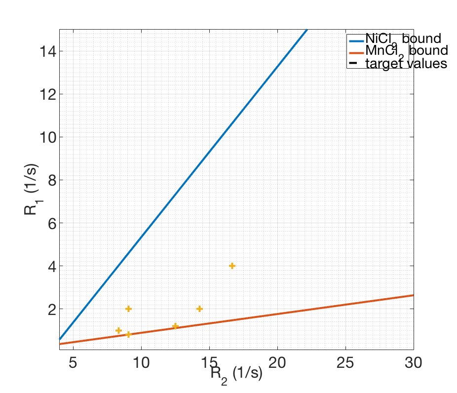
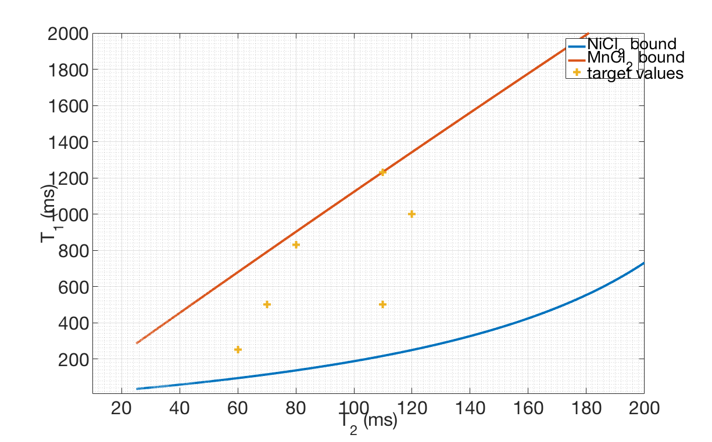

Paramagnetic Ions
Ni Mn
ions = {'NiCl_2', 'MnCl_2'};
molarMass = [129.6, 125.844];
m1 = [0.613, 7.417];
rW1 = [0.238, 0.444];
m2 = [0.773, 84.996];
rW2 = [3.880, 3.530];
ion1 = 1;
ion2 = 2;
fprintf('Ion 1 = %s, Ion 2 = %s\n', ions{ion1}, ions{ion2})
r2_range = 0.01:0.01:40;
rW1fixed = mean(rW1);
rW2fixed = mean(rW2);
r2fun = @(ii) m1(ii) / m2(ii) * (r2_range - rW2fixed) + rW1fixed;
t2fun = @(ii) m2(ii) / (m1(ii)*(r2_range - rW2fixed) + rW1fixed);
t2mix = [80, 110, 110, 120, 60, 70];
t1mix = [830, 500, 1230, 1000, 250, 500];
r2mix = 1000./t2mix;
r1mix = 1000./t1mix;
figure(1);
plot(r2_range, r2fun(ion1), r2_range, r2fun(ion2), r2_range, 0 * r2_range, 'k--', r2mix, r1mix, '+', 'linewidth', 2)
grid on
grid minor
xlabel('R_2 (1/s)');
ylabel('R_1 (1/s)');
xlim([4, 30]);
ylim([.1, 15]);
legend(sprintf('%s bound', ions{ion1}), sprintf('%s bound', ions{ion2}), 'target values')
faxis;
figure(2);
plot(1000./r2_range, 1000./r2fun(ion1), 1000./r2_range, 1000./r2fun(ion2), 1000./r2mix, 1000./r1mix, '+', 'linewidth', 2)
grid on
grid minor
xlabel('T_2 (ms)');
ylabel('T_1 (ms)');
xlim([10, 200]);
ylim([10, 2000]);
legend(sprintf('%s bound', ions{ion1}), sprintf('%s bound', ions{ion2}), 'target values')
faxis;
% Concentrations in mM
fprintf('mM Concentrations of %s\n',ions{ion1})
kAmix = (m2(ion2) * (r1mix - rW1fixed) - m1(ion2) * (r2mix - rW2fixed))./(m2(ion2) * m1(ion1) - m1(ion2) * m2(ion1))
fprintf('Max concentration of %s: %.03f mM\n', ions{ion1}, max(kAmix));
kBmix = -(m2(ion1) * (r1mix - rW1fixed) - m1(ion1) * (r2mix - rW2fixed))./(m2(ion2) * m1(ion1) - m1(ion2) * m2(ion1))
fprintf('Max concentration of %s: %.03f mM\n', ions{ion2}, max(kBmix));
hold off
Ion 1 = NiCl_2, Ion 2 = MnCl_2
mM Concentrations of NiCl_2
kAmix =
0.1766 2.1795 0.0037 0.4676 4.6338 1.3486
Max concentration of NiCl_2: 4.634 mM
kBmix =
0.1019 0.0435 0.0633 0.0502 0.1104 0.1122
Max concentration of MnCl_2: 0.112 mM
 